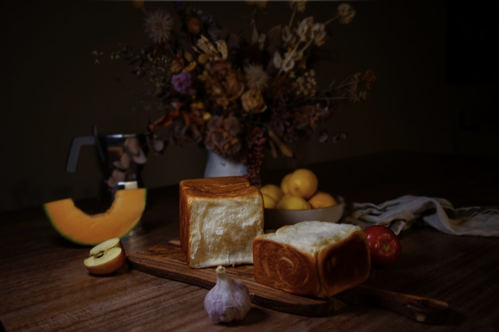
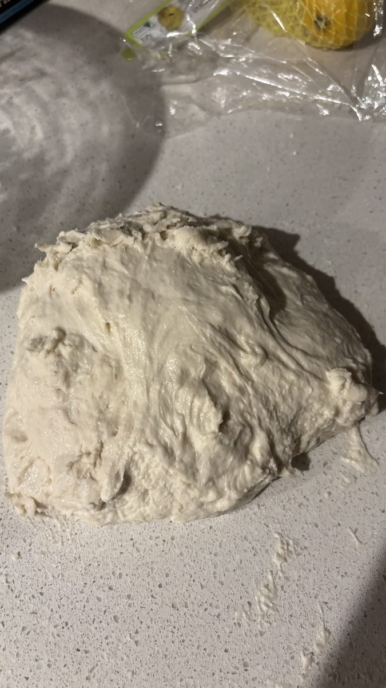
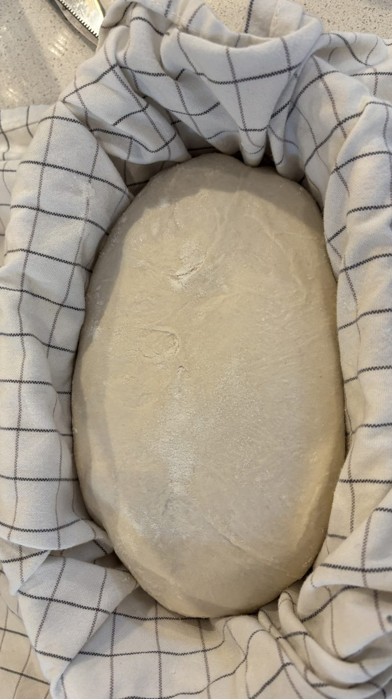
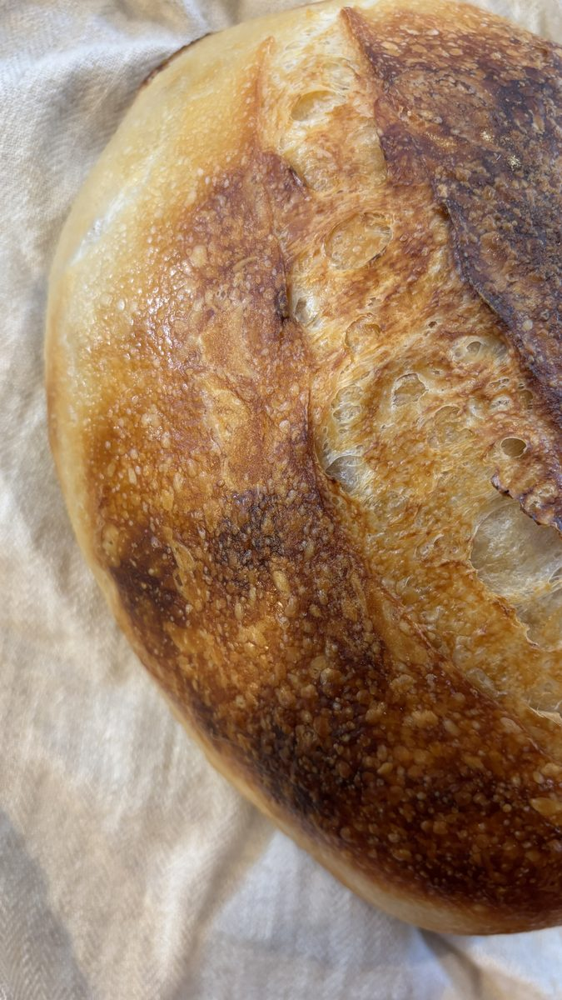
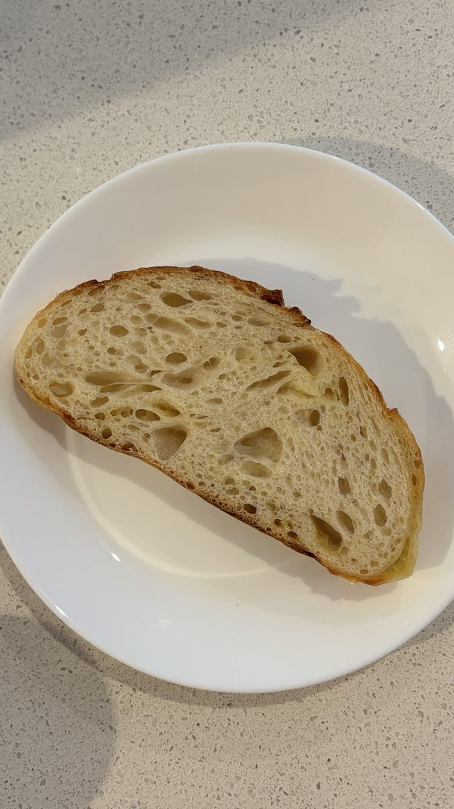
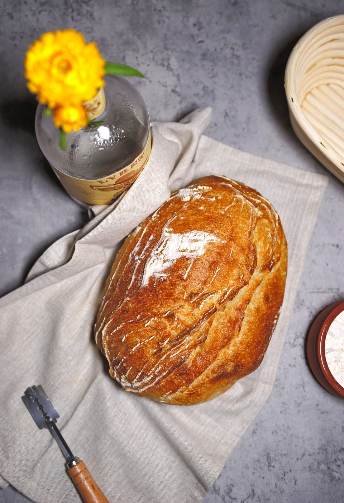

Bread, Practice & everything I Learn Along the Way
An ongoing experiment in bread-making, photography, and building something of my own.
“As much as talent counts, effort counts twice.”

A year of making bread
In 2026, during my free time, I spent my time working on my bread making skills.
It started as a simple challenge: to do something fun with my hands. I didn’t expect it to become such a long-running experiment.
Bread-making didn’t come naturally. In fact, quite terribly. When I studied design in The Netherlands, I took a class about bread. Every week my classmates would showcase their fluffy bread, but mine were quite dense, uneven crusts, and plenty of attempts that didn’t turn out the way I imagined.
So this year I decided to challenge myself and give it another go.
Slowly, I started to recognise the signs. I paid closer attention to how the dough would rise, and what it needed at each stage. Instead of relying on a recipe alone, I began to develop an intuition of my own.
What started as a hobby became an unexpected lesson in design: improvement rarely comes from one big breakthrough. More often, it comes from practice, repetition, observation, and making small adjustments along the way.




Seeing bread differently
As my bread-making improved, I became just as interested in documenting the process.
I started experimenting with photography – working with light, shadows, textures, and composition to capture the character of each loaf. I was drawn to a darker, more painterly style, where the bread could sit alongside everyday objects and flowers, almost like a still-life painting.
Photography became another way to practise looking more closely. The same loaf could feel entirely different depending on the light, the angle, or the details I chose to include.
It wasn’t just about showing the final result. I wanted to capture the quiet satisfaction of making something by hand.


Building a tool to document my process
After a few months, I thought I could make a tool to bring everything together: the recipes I tried and tweaked were scattered across different apps, my photos were everywhere, and I wanted to visualise my calendar as I get into a rhythm of baking weekly.
So I vibe-coded a little website of my own.
It became a bread calendar to document my recipes and photography.
It was also a chance to build something for fun: to explore an idea, make it tangible, and see where it led.
Visit the bread calendarStill learning
I’m proud to say that my family haven’t bought any bread since the start of 2026, but there’s always another technique to try, another loaf that turns out differently than expected.
Whether I’m shaping dough, composing a photograph, or building a small digital experience, I keep coming back to the same thing: curiosity, a willingness to experiment, and the satisfaction of making something a little better than before.